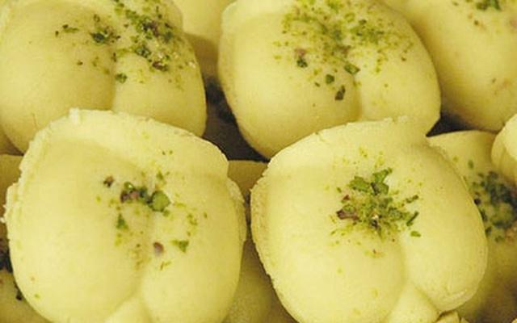
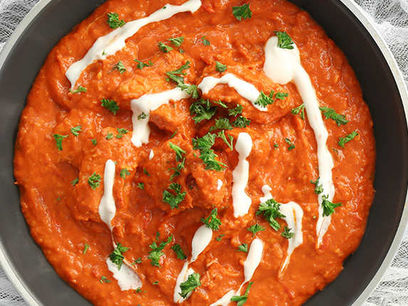

Famous Things to eat and drink in Kolkata
1. Kosha Mangsho At Golbari

This venerated eatery has been the go-to place for kosha mangshofor every Calcuttan, no matter their status or class. You can never go wrong with their spicy dish made with a special concoction of ingredients; it’s considered to be the most authentic version available in the city.
2. Rosogolla At Chittaranjan Mistanna Bhandar

Established in 1907 by Hiralal Ghosh, Chittaranjan is a top sweetmeat seller in north Kolkata. Their Sponge Rosogolla is the stuff of nostalgia – juicy, soft and melt-in-the-mouth.
3.Coffee At Indian Coffee House

This iconic eatery has been the adda hotspot of some of Kolkata’s greatest minds. Today, it welcomes intellectuals, college students, office goers and travellers alike.
4.Mishti Doi At Mithai

Mishti doi is to Kolkata as pizzas are to Italy. The brainchild of the Ghosh brothers, Mithai is best-known for the white Mishti Doi as opposed to the traditional jaggery-based dessert.
5.Sorbot At Paramount

This College Street joint was established in 1918, and remains a favourite among college goers. Their sherbets are the best, hands down, whether it’s Daab (coconut), Cocoa Malai, Strawberry Malai, Mango Mania or Kesar Malai.
6.Cutlet And Chops At Mitra Café

Started as a tea joint by Ganesh Mitra, it is now a non-vegetarian haven that serves some of Kolkata’s best cutlets and chops. Gorge on their signature Chicken Kabiraji, Fish Diamond Fry, Brain Chop and Prawn Afghani. The flavours are timeless.
7.Phuchka At Vivekananda Park

Love phuchka? Then head to Vivekananda Park and you will find phuchkawalas working flavour magic like robots in a factory. What makes these special are their quality and variety – we recommend the dahi phuchka and aloo dum phuchka.
8.Sandesh At Nalin Chandra Das & Sons

From Talshansh and Chocolate Sandesh to Butterscotch Jolbhora and Orange Jolbhora, this shop serves incredible fusion mishti. In fact, here, mishtimaking is an art form. Their Ice Cream Sandesh is fabulous too.
9.Rolls At Nizam’s

Started in the early 1930s by SK Hasan Raza, Nizam’s invented the kathi roll and still rules the roost when it comes to this typical street delicacy.
10.Butter Chicken At Sher-E-Punjab

This small takeaway has the best butter chicken in Kolkata. It’s not just another tikka-based gravy cooked with butter - specially concocted rich gravy has robust flavours of fenugreek and oodles of cream on top. It’s a pure delight on a wintry or rainy night.